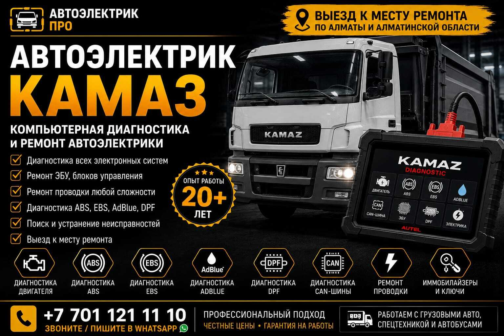
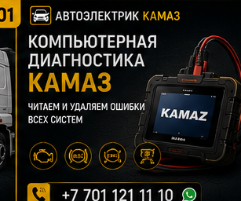
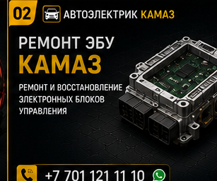
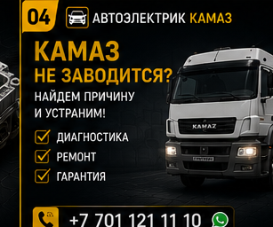
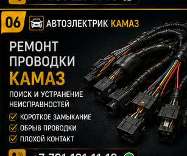
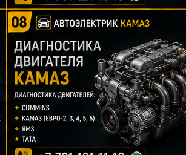
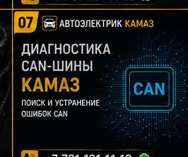
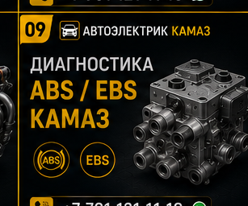
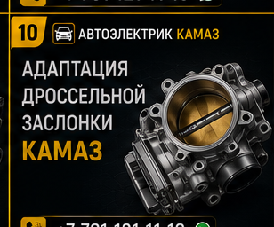

Автоэлектрик КамАЗ с выездом. Компьютерная диагностика, ремонт электрики, проводки, стартера и генератора, диагностика CAN-шины, датчиков и электронных систем КамАЗ.

🔧 Проверьте и попробуйте решить сами — приложение «АвтоЭлектрик PRO» →
🚛 Автоэлектрик КамАЗ — диагностика и ремонт электрики КамАЗ
Автоэлектрик КамАЗ — компьютерная диагностика, поиск неисправностей электрооборудования и ремонт электрических систем грузовых автомобилей КамАЗ.
Работаем с неисправностями запуска двигателя, генератора и стартера, проводки, освещения, электронных блоков, датчиков, CAN-шины и других систем грузового автомобиля.
🔧 Диагностика КамАЗ
💻 Компьютерная диагностика двигателя
⚡ Ремонт электрики КамАЗ
🔋 Диагностика генератора и аккумуляторов
🔑 Ремонт системы запуска
🚨 Поиск ошибок и неисправностей
🔌 Поиск обрывов и коротких замыканий
📡 Диагностика CAN-шины
🚛 Диагностика КамАЗ с выездом
🔍 Компьютерная диагностика КамАЗ
Современные КамАЗ оснащаются электронными системами управления, поэтому при появлении неисправности важно определить не только код ошибки, но и её причину.
Проверяются:
💻 электронный блок двигателя;
⚙️ система управления двигателем;
🔋 система зарядки;
🚛 электронные системы грузовика;
📡 CAN-шина;
🌡️ датчики;
⚡ исполнительные механизмы;
🔌 электропроводка.
Считываем ошибки, анализируем текущие параметры и проверяем соответствующие электрические цепи.
🚨 КамАЗ не заводится
Если КамАЗ перестал запускаться, необходимо определить, где именно находится неисправность.
Проверяем:
🔋 аккумуляторы;
⚡ напряжение питания;
🔩 массу двигателя;
🔧 стартер;
⚙️ втягивающее реле;
💻 электронный блок управления;
🔌 проводку;
🔑 систему запуска;
⛽ электронное управление топливной системой.
Если стартер вообще не работает, отдельно проверяется цепь его управления и силовое питание.
Если двигатель прокручивается, но не запускается, проводится уже другая последовательность диагностики.
🔋 Диагностика аккумуляторов КамАЗ
На грузовом автомобиле особенно важно состояние аккумуляторных батарей и соединений между ними.
Проверяется:
🔋 напряжение аккумуляторов;
🔌 соединения;
⚡ силовые провода;
🔩 масса;
🔋 состояние клемм;
⚡ падение напряжения при запуске.
Если аккумуляторы разряжаются, необходимо проверить не только сами батареи, но и генератор, проводку и возможное потребление тока.
⚡ Ремонт генератора КамАЗ
Если генератор перестал нормально заряжать аккумуляторы, на панели могут появиться предупреждения, а после нескольких поездок автомобиль может перестать запускаться.
Проверяем:
🔍 напряжение зарядки;
🔍 силовые соединения;
🔍 массу;
🔍 регулятор напряжения;
🔍 провод возбуждения;
🔍 состояние проводки.
При необходимости выполняется ремонт или замена неисправных компонентов.
🔧 Ремонт стартера КамАЗ
Неисправность стартера может проявляться следующим образом:
🔴 стартер не реагирует;
🔴 слышен щелчок;
🔴 стартер вращается медленно;
🔴 запуск происходит через раз;
🔴 стартер работает, но двигатель не прокручивается.
Проверяется вся цепь запуска, после чего определяется причина неисправности.
В зависимости от состояния возможен ремонт:
⚙️ втягивающего реле;
🔩 щёточного узла;
⚙️ бендикса;
🔧 втулок;
🔩 других элементов стартера.
🔌 Ремонт проводки КамАЗ
На грузовых автомобилях электрическая проводка работает в условиях вибраций, влаги, грязи и перепадов температуры.
Возможны:
⚡ обрыв провода;
⚡ короткое замыкание;
🔌 окисление контактов;
🔩 плохая масса;
🔥 перегрев соединения;
💧 попадание влаги в разъём.
При поиске неисправности проверяется конкретная электрическая цепь, а не производится случайная замена деталей.
💡 Ремонт освещения КамАЗ
Диагностируем неисправности:
💡 фар;
💡 габаритов;
💡 стоп-сигналов;
💡 указателей поворота;
💡 задних фонарей;
💡 противотуманных фар;
💡 дополнительного освещения.
Если лампа исправна, проверяются питание, масса, предохранители, реле, проводка и соответствующие блоки.
📡 Диагностика CAN-шины КамАЗ
На электронных КамАЗах неисправность CAN-шины может привести сразу к нескольким ошибкам.
Например:
⚠️ пропадает связь с электронным блоком;
⚠️ появляются многочисленные ошибки;
⚠️ некорректно работают датчики;
⚠️ появляются проблемы с запуском;
⚠️ некоторые системы перестают обмениваться данными.
В такой ситуации необходимо проверить питание блоков, массу, линии связи и разъёмы.
🌡️ Диагностика датчиков КамАЗ
Современный дизельный двигатель использует большое количество датчиков.
Неисправность датчика или его проводки может привести к ошибкам и неправильной работе двигателя.
Проверяются:
🌡️ температура;
💨 давление;
🔄 положение и частота вращения;
⚙️ параметры системы управления двигателем;
🔌 электрические цепи датчиков.
При наличии ошибки важно определить, неисправен сам датчик или проблема находится в проводке.
🚛 Автоэлектрик КамАЗ с выездом
Если КамАЗ неисправен и находится:
📍 на стоянке;
📍 возле базы;
📍 на территории предприятия;
📍 возле дороги;
📍 на строительном объекте;
📍 в гараже,
можно вызвать автоэлектрика для первичной диагностики.
Особенно удобно это, когда грузовой автомобиль не заводится и его проблематично доставить на СТО.
При выезде можно выполнить компьютерную диагностику и проверить основные электрические цепи. Объём ремонта на месте зависит от характера неисправности.
🛠️ Диагностика КамАЗ после ремонта двигателя
После капитального или серьёзного ремонта двигателя желательно проверить электронные системы автомобиля.
Проверяется:
💻 наличие ошибок;
🔌 проводка;
🌡️ датчики;
⚡ питание блоков;
🔋 зарядка;
📊 текущие параметры двигателя.
Это позволяет обнаружить проблемы с подключением датчиков и электропроводкой после сборки.
⚙️ КамАЗ глохнет во время движения
Если двигатель внезапно заглох, причин может быть несколько.
Необходимо проверить:
🔋 питание электронных блоков;
⚡ напряжение бортовой сети;
🔌 массу;
📡 CAN-шину;
🌡️ датчики;
💻 ошибки блока управления;
⛽ управление топливной системой.
Особенно важно считать ошибки до их удаления, поскольку они могут помочь определить направление поиска неисправности.
🚨 Загорелись ошибки на КамАЗ
Если одновременно загорелось несколько предупреждений, не стоит сразу менять датчики или электронные блоки.
Сначала проводится:
1️⃣ компьютерная диагностика;
2️⃣ чтение кодов неисправностей;
3️⃣ анализ текущих параметров;
4️⃣ проверка питания;
5️⃣ проверка массы;
6️⃣ проверка проводки;
7️⃣ поиск конкретной причины.
Только после этого определяется необходимый ремонт.
🔧 Какие работы выполняет автоэлектрик КамАЗ?
Основные направления:
🔍 компьютерная диагностика;
⚡ ремонт электропроводки;
🔋 диагностика аккумуляторов;
⚙️ ремонт генератора;
🔧 ремонт стартера;
💡 ремонт освещения;
📡 диагностика CAN;
🌡️ проверка датчиков;
🔌 поиск коротких замыканий;
🔩 восстановление массы;
💻 диагностика электронных блоков;
🚛 выездная диагностика грузовика.
🚚 Какие КамАЗ диагностируем?
Диагностика проводится с учётом конкретной модели и установленной электронной системы.
В том числе могут обращаться владельцы:
🚛 КамАЗ 5490
🚛 КамАЗ 65115
🚛 КамАЗ 6520
🚛 КамАЗ 54901
🚛 КамАЗ 43118
🚛 КамАЗ 6522
🚛 КамАЗ 65116
🚛 КамАЗ 5320
🚛 КамАЗ 55111
🚛 других моделей КамАЗ
Для точной диагностики желательно сообщить модель, год выпуска и характер неисправности.
📋 Как проходит диагностика КамАЗ?
1️⃣ Опрос водителяУточняем, когда появилась неисправность и при каких условиях.
2️⃣ Первичная проверкаПроверяем аккумуляторы, питание и основные соединения.
3️⃣ Компьютерная диагностикаСчитываем ошибки электронных блоков.
4️⃣ Анализ параметровПроверяем работу систем в текущем времени.
5️⃣ Электрическая диагностикаПри необходимости проверяем проводку, массу, питание и CAN.
6️⃣ Поиск причиныОпределяем неисправный элемент или участок цепи.
7️⃣ РемонтУстраняем обнаруженную неисправность.
8️⃣ Контрольная диагностикаПосле ремонта повторно проверяем автомобиль.
💰 Сколько стоит автоэлектрик КамАЗ?
Цена зависит от характера неисправности.
На стоимость влияют:
🔹 модель КамАЗ;
🔹 сложность электронной системы;
🔹 необходимость компьютерной диагностики;
🔹 объём поиска неисправности;
🔹 состояние проводки;
🔹 необходимость ремонта стартера или генератора;
🔹 место нахождения автомобиля.
Поэтому окончательную стоимость ремонта правильнее определять после диагностики.
❓ Частые вопросы
Можно ли вызвать автоэлектрика КамАЗ на место?
Да, первичную диагностику грузового автомобиля можно провести с выездом.
КамАЗ не заводится — что проверять?
В первую очередь аккумуляторы, стартер, питание, массу и систему управления запуском.
Можно ли диагностировать ошибки КамАЗ компьютером?
Да, при наличии подходящего диагностического оборудования.
Почему КамАЗ не заряжает аккумуляторы?
Причиной может быть генератор, регулятор напряжения, проводка, масса или соединения.
Можно ли найти обрыв проводки?
Да. Электрические цепи проверяются по соответствующим схемам и измерениям.
Почему на КамАЗ появилось много ошибок одновременно?
Причиной может быть проблема с питанием, массой, CAN-шиной или общим электронным узлом.
Можно ли проверить CAN-шину?
Да, при наличии соответствующих симптомов проверяется питание блоков и линии связи.
Ремонтируется ли стартер КамАЗ?
Да, при ремонтопригодном состоянии стартера можно заменить отдельные неисправные компоненты.
Ремонтируется ли генератор КамАЗ?
Во многих случаях можно восстановить генератор заменой неисправных деталей.
Работаете ли с КамАЗ после ремонта двигателя?
Да, можно провести компьютерную диагностику и проверить электронную часть после ремонта.
⚡ Нужен автоэлектрик КамАЗ?
Если КамАЗ не заводится, пропала зарядка, появились ошибки, заглох двигатель, неисправна проводка или перестала работать электроника, не стоит менять детали наугад.
🔍 Компьютерная диагностика
💻 Проверка электронных блоков
⚡ Ремонт электропроводки
🔋 Диагностика аккумуляторов и генератора
🔧 Ремонт стартера
📡 Диагностика CAN-шины
🌡️ Проверка датчиков
🚛 Выезд к грузовому автомобилю
Автоэлектрик КамАЗ — компьютерная диагностика, ремонт электрики и выездная диагностика грузовых автомобилей КамАЗ.
Наши услуги
Диагностика КамАЗ: ремонт ЭБУ, восстановление CAN, поиск короткого замыкания, диагностика иммобилайзера, ABS, EBS, AdBlue, сажевого фильтра, двигателя, КПП, генератора, стартера и системы охлаждения, ремонт отопителей.

Компьютерная диагностика КамАЗ
Полная диагностика электронных систем автомобиля для выявления неисправностей.

Диагностика и ремонт ЭБУ
Диагностика и ремонт электронных блоков управления для обеспечения корректной работы автомобиля.

Диагностика и восстановление CAN-шины
Проверка и восстановление работы сети CAN для обеспечения стабильной связи между электронными компонентами.

Ремонт электропроводки
Поиск и устранение неисправностей в электрических проводах и соединениях.

Поиск короткого замыкания
Определение и устранение коротких замыканий в электрических системах автомобиля.

Диагностика и ремонт иммобилайзера
Проверка и ремонт системы иммобилайзера для обеспечения безопасности автомобиля.

Диагностика ABS
Проверка системы антиблокировки тормозов для обеспечения безопасности движения.

Диагностика EBS
Проверка системы электронного управления тормозами для повышения эффективности торможения.
Вопросы и ответы
Какие модели КамАЗ вы обслуживаете?
Работаем с современными и более ранними моделями КамАЗ, включая самосвалы, тягачи, бортовые автомобили, коммунальную технику и спецтехнику.
Можно ли провести диагностику на месте?
Да. Во многих случаях компьютерная диагностика и часть ремонтных работ выполняются непосредственно у автомобиля.
Выполняете ли диагностику AdBlue и SCR?
Да.
Выполняете ли ремонт ЭБУ КамАЗ?
Да. Проводим диагностику и ремонт электронных блоков управления двигателем и других электронных модулей.
Работаете ли с организациями?
Да. Обслуживаем частных клиентов, транспортные компании и другие организации, предоставляя полный комплект закрывающих документов.
Преимущества
26 лет опыта, специализация на грузовиках, современное оборудование, ремонт ЭС, официальные чеки, выезд к авто, гарантия.
Большой опыт работы
Более 26 лет опыта в ремонте автоэлектрики грузовых автомобилей и спецтехники.
Специализация
Фокус на грузовых автомобилях и спецтехнике, что позволяет нам глубоко разбираться в особенностях их систем.
Современное оборудование
Использование профессионального диагностического оборудования для точной диагностики и качественного ремонта.
Ремонт любой сложности
Профессиональный ремонт электронных систем любой сложности.
Официальные документы
Оформление официальных чеков и документов для физических и юридических лиц.
Выезд к клиенту
Возможность выезда к месту нахождения автомобиля для проведения диагностики и ремонта.
Гарантия
Предоставление гарантии на все выполненные работы.
Стоимость услуг
Компьютерная диагностика и автоэлектрик — от 20 000 ₸; ремонт ЭБУ — индивидуально.
Компьютерная диагностика
Проверка электронных систем автомобиля КамАЗ.
20000₸
Компьютерная диагностика
Выезд автоэлектрика
Обслуживание автоэлектрики на месте.
25000₸
Выезд автоэлектрика
Поиск неисправности
Определение причин неисправности автоэлектрики.
20000₸
Поиск неисправности
Связанные услуги
КОНТАКТЫ ОЛЕГА
📞 Телефон: +7 701 121 11 10
🟢 WhatsApp: +7 701 121 11 10
📍 Адрес: ул. Мартынова, 39, Алматы
🗺 Проложить маршрут
⏰ Круглосуточно, без выходных
🧾 Документы и чеки, работаю на сервисе, выезжаю к клиентам на место, на дом или в офис по Алматы и области.
💬 Консультирую по телефону, помогу определить неисправность даже до выезда.
⚙️ Стаж более 26 лет. Занимаюсь профессионально ремонтом авто, выполняю сложный ремонт блоков.